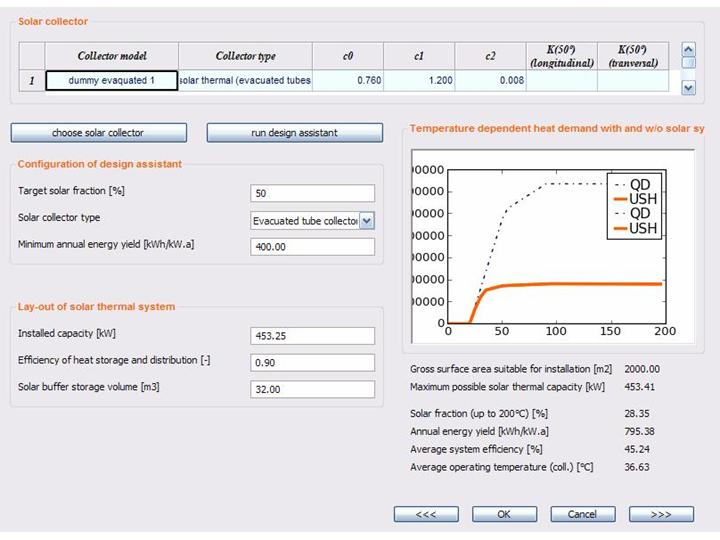
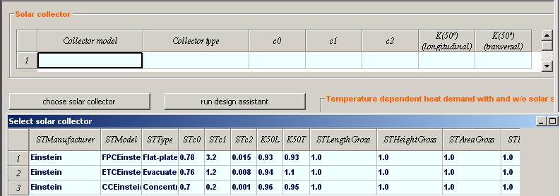

User Manual
Chapter 7. xxx: Solar
Thermal
The
Einstein ST module helps you to configure a solar thermal plant (the
solar
field plus the solar heat storage tank) , taking into account some
operational
conditions such as the surface area suitable for installation, the heat
demand
up to 200°C and the weather conditions such as the solar irradiance
and the ambient temperature.
In
order to make it easier, the Design Assistant may define for you all
the basic
parameters needed to design the plant, e.g. the solar fraction, the
type of
collectors and the minimum unitary energy yield.
So,
let’s start.
Lay-out of
the ST module window
In
the first quadrant
“Solar collector” (top-left)
the technical features of the solar thermal collector chosen in the
current
alternative are displayed. Besides the name of the solar equipment some
additional information such as the optical efficiency, the linear and
quadratic
heat loss coefficients and the longitudinal incident angle (along the
tube) and
the transversal incidence (perpendicular to the tube) angle modifiers
are
given.
In
the second quadrant (top-right) the graph shows the cumulative
yearly
heat demand curve up to about 200°C. Once
the solar thermal plant is designed, the yearly
solar energy delivered is also showed up (in orange).
In
the third quadrant
“Configuration of
design assistant” (bottom-left) 3 designing criteria are shown that can
be
modified by the user:
- Target
solar fraction [%]
(default value: 50.0%): it is defined as the ratio of the
annual thermal energy delivered by the system to the annual heat demand
up to 200°C. Theoretically it may range between 0 and 100%.
- Solar
collector type [%]
(default value: any): 5 options are foreseen – Flat-plat
collector, Evacuated tubes collector, Concentrating collector,
pre-selected collector and any. When the pre-selected collector option is chosen by the user then it
is mandatory to enter a specific solar collector clicking on the
button “choose solar collector”. In the other cases, the tool selects
automatically the solar collector that performs the best energy results
among those available in the database, under the category specified by
the user (e.g. Flat plate).
- Minimum
annual energy yield [kWh/kWth.a]
(default value: 300): it allows the user to specify the minimum
solar energy supplied per kWth installed below which the
plant is considered not economically
viable, in given operating conditions.
In
the forth quadrant
“Lay-out of
solar thermal system” (bottom-left) the configuration of the solar
thermal
plant (i.e. according the Einstein tool terminology: “heat generation
equipment”) either is shown after running the design assistant or can
be set manually
by the user specifying the following parameters:
- Installed
capacity [kW]:
it defines the size of the solar thermal plant.
- Efficiency
of heat storage and distribution [%]
(default value: 0.9): it roughly accounts for the heat losses
in the storage tank and in the distribution pipelines.
- Solar buffer storage volume [m3]
(default value: 0.05 m3/m2 of solar collector
aperture area ): it defines the solar heat storage capacity . If
not specified by the user, the total storage is automatically
calculated multiplying the default value by the aperture area of the
solar field. Using a V/S factor of 0.05 m3/m2,
implicitly it is assumed that the heat demand is continuous, i.e. no
major breaks occur .
In
the fifth
quadrant
(bottom-right below the graph) some
auxiliary information are shown in order to help the user in his
designing
process. The key-parameters visualised
here are:
- Gross
surface area suitable for installation [m2]:
it is derived from the questionnaire eliminating, e.g., the shading
surfaces or the tilted surfaces oriented to the North. The figure shown
says how big is the installing ground and/of roof area.
- Maximum
possible solar thermal capacity [kW]:
it is the estimated maximum power that can be supplied by a solar
thermal field sized on the corresponding Gross surface area
suitable for installation. It has to
be lower
than the Installed capacity [kW].
- Solar
fraction (up to 200°C) [%]:
it is a simulation result that can be easily compared to the target
solar fraction in order to check whether the solar thermal plant
performs the expectations of the user or not. If the latter, the user
has to change manually one or more design criteria.
- Annual
energy yield [kWh/kWth.a]:
it is a simulation result. In order to make the plant economically
viable, it has to be higher than the minimum annual energy yield.
Otherwise the user has to change manually one or more design criteria.
- Average
system efficiency [%]: it
is a simulation result. It is defined as the ratio of the annual solar
system energy output to the annual solar irradiance on a tilted
surface. Expected values in standard operational conditions range
between 35 and 60%.
- Average
operating temperature (coll.) [°C]: it
is a simulation result. Lower the average collector temperature, higher
is the expected system efficiency. This parameter can be useful to
choose the most appropriate collector type. Flat-plates, for example,
show a good behaviour at low temperatures, while at medium temperature
it is recommended to install either high efficiency or concentrating
collectors.

Figure 7.xx.1 The Solar
Thermal (ST) module window
How to design
a solar thermal system?
The
ST calculation module offers to the user at least the following options:
- To
design a new system fully automatically clicking on the ‘run design
assistant’ button (top-left) and… Einstein
will work for him/her! Indeed the design assistant is able to analyse a
set of given (or estimated whenever the user forgets to enter all the
questionnaire parameters) conditions, and to configure a suitable solar
thermal plant.
- To
run the design assistant and, afterwards, to adjust manually the
configuration proposed automatically by Einstein.
- To
choose first a solar thermal collector clicking on the ‘choose solar
collector’ button, and then to run the design assistant clicking on
the ‘run design assistant’ button w/o modifying the Target
solar fraction and/or the Minimum annual energy yield
configuration parameters (se above).
- To define fully manually both the solar thermal collector
clicking on the ‘choose solar collector’ button and the solar
plant size specifying the lay-out parameters, i.e. the Installed
capacity, the Efficiency of heat storage and
distribution and the Solar buffer storage volume.
Clicking
on the
‘choose solar
collector’ button the solar thermal collector database is shown in
order to
allow the user to select an equipment. Pay attention: a new solar
collector cannot
be added into the database as soon as it is shown . Whenever the
user wants
to enter new data he/she has first to accede the solar thermal database
via the
main menu bar. Once the solar collector is selected, it can be deleted
by right
clicking on it.

Figure 7.xxx.1 The
"choose solar collector" option and the solar thermal database view
Finally,
the
user can accept the solar thermal plant configuration by clicking the ‘ok’
button (bottom-left).